- 00 开篇词 迎难而上，做云原生时代的弄潮儿.md
- 00 课前准备 动手实践才是最好的学习方式.md
- 01 初识容器：万事开头难.md
- 02 被隔离的进程：一起来看看容器的本质.md
- 03 容器化的应用：会了这些你就是Docker高手.md
- 04 创建容器镜像：如何编写正确、高效的Dockerfile.md
- 05 镜像仓库：该怎样用好Docker Hub这个宝藏.md
- 06 打破次元壁：容器该如何与外界互联互通.md
- 07 实战演练：玩转Docker.md
- 08 视频：入门篇实操总结.md
- 09 走近云原生：如何在本机搭建小巧完备的Kubernetes环境.md
- 10 自动化的运维管理：探究Kubernetes工作机制的奥秘.md
- 11 YAML：Kubernetes世界里的通用语.md
- 12 Pod：如何理解这个Kubernetes里最核心的概念？.md
- 13 Job_CronJob：为什么不直接用Pod来处理业务？.md
- 14 ConfigMap_Secret：怎样配置、定制我的应用.md
- 15 实战演练：玩转Kubernetes（1）.md
- 16 视频：初级篇实操总结.md
- 17 更真实的云原生：实际搭建多节点的Kubernetes集群.md
- 18 Deployment：让应用永不宕机.md
- 19 Daemonset：忠实可靠的看门狗.md
- 20 Service：微服务架构的应对之道.md
- 21 Ingress：集群进出流量的总管.md
- 22 实战演练：玩转Kubernetes（2）.md
- 23 视频：中级篇实操总结.md
- 24 PersistentVolume：怎么解决数据持久化的难题？.md
- 25 PersistentVolume + NFS：怎么使用网络共享存储？.md
- 26 StatefulSet：怎么管理有状态的应用？.md
- 27 滚动更新：如何做到平滑的应用升级降级？.md
- 28 应用保障：如何让Pod运行得更健康？.md
- 29 集群管理：如何用名字空间分隔系统资源？.md
- 30 系统监控：如何使用Metrics Server和Prometheus？.md
- 31 网络通信：CNI是怎么回事？又是怎么工作的？.md
- 32 实战演练：玩转Kubernetes（3）.md
- 33 视频：高级篇实操总结.md
- 加餐 docker-compose：单机环境下的容器编排工具.md
- 加餐 谈谈Kong Ingress Controller.md
- 结束语 是终点，更是起点.md
30 系统监控：如何使用Metrics Server和Prometheus？
你好，我是Chrono。
在前面的两节课里，我们学习了对Pod和对集群的一些管理方法，其中的要点就是设置资源配额，让Kubernetes用户能公平合理地利用系统资源。
虽然有了这些方法，但距离我们把Pod和集群管好用好还缺少一个很重要的方面——集群的可观测性。也就是说，我们希望给集群也安装上“检查探针”，观察到集群的资源利用率和其他指标，让集群的整体运行状况对我们“透明可见”，这样才能更准确更方便地做好集群的运维工作。
但是观测集群是不能用“探针”这种简单的方式的，所以今天我就带你一起来看看Kubernetes为集群提供的两种系统级别的监控项目：Metrics Server和Prometheus，以及基于它们的水平自动伸缩对象HorizontalPodAutoscaler。
Metrics Server
如果你对Linux系统有所了解的话，也许知道有一个命令 top 能够实时显示当前系统的CPU和内存利用率，它是性能分析和调优的基本工具，非常有用。Kubernetes也提供了类似的命令，就是 kubectl top，不过默认情况下这个命令不会生效，必须要安装一个插件Metrics Server才可以。
Metrics Server是一个专门用来收集Kubernetes核心资源指标（metrics）的工具，它定时从所有节点的kubelet里采集信息，但是对集群的整体性能影响极小，每个节点只大约会占用1m的CPU和2MB的内存，所以性价比非常高。
下面的这张图来自Kubernetes官网，你可以对Metrics Server的工作方式有个大概了解：它调用kubelet的API拿到节点和Pod的指标，再把这些信息交给apiserver，这样kubectl、HPA就可以利用apiserver来读取指标了：
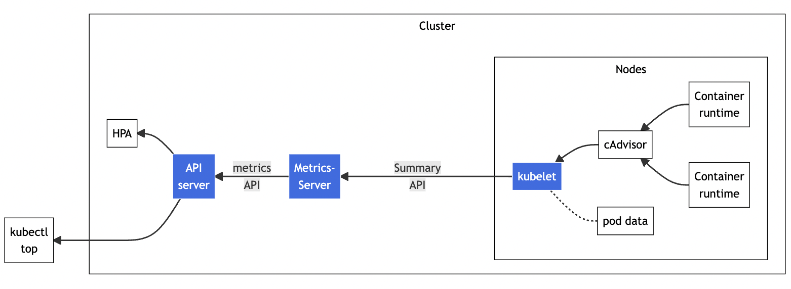
在Metrics Server的项目网址（https://github.com/kubernetes-sigs/metrics-server）可以看到它的说明文档和安装步骤，不过如果你已经按照[第17讲]用kubeadm搭建了Kubernetes集群，就已经具备了全部前提条件，接下来只需要几个简单的操作就可以完成安装。
Metrics Server的所有依赖都放在了一个YAML描述文件里，你可以使用wget或者curl下载：
wget https://github.com/kubernetes-sigs/metrics-server/releases/latest/download/components.yaml
但是在 kubectl apply 创建对象之前，我们还有两个准备工作要做。
第一个工作，是修改YAML文件。你需要在Metrics Server的Deployment对象里，加上一个额外的运行参数 --kubelet-insecure-tls，也就是这样：
apiVersion: apps/v1
kind: Deployment
metadata:
name: metrics-server
namespace: kube-system
spec:
... ...
template:
spec:
containers:
- args:
- --kubelet-insecure-tls
... ...
这是因为Metrics Server默认使用TLS协议，要验证证书才能与kubelet实现安全通信，而我们的实验环境里没有这个必要，加上这个参数可以让我们的部署工作简单很多（生产环境里就要慎用）。
第二个工作，是预先下载Metrics Server的镜像。看这个YAML文件，你会发现Metrics Server的镜像仓库用的是gcr.io，下载很困难。好在它也有国内的镜像网站，你可以用[第17讲]里的办法，下载后再改名，然后把镜像加载到集群里的节点上。
这里我给出一段Shell脚本代码，供你参考：
repo=registry.aliyuncs.com/google_containers
name=k8s.gcr.io/metrics-server/metrics-server:v0.6.1
src_name=metrics-server:v0.6.1
docker pull $repo/$src_name
docker tag $repo/$src_name $name
docker rmi $repo/$src_name
两个准备工作都完成之后，我们就可以使用YAML部署Metrics Server了：
kubectl apply -f components.yaml
Metrics Server属于名字空间“kube-system”，可以用 kubectl get pod 加上 -n 参数查看它是否正常运行：
kubectl get pod -n kube-system
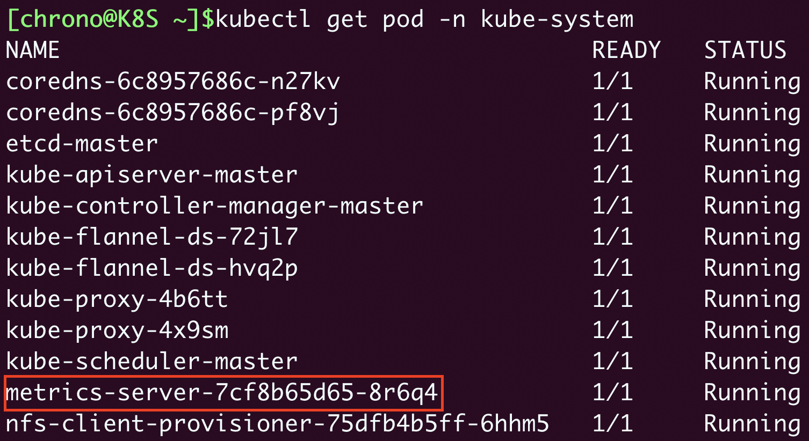
现在有了Metrics Server插件，我们就可以使用命令 kubectl top 来查看Kubernetes集群当前的资源状态了。它有两个子命令，node 查看节点的资源使用率，pod 查看Pod的资源使用率。
由于Metrics Server收集信息需要时间，我们必须等一小会儿才能执行命令，查看集群里节点和Pod状态：
kubectl top node
kubectl top pod -n kube-system
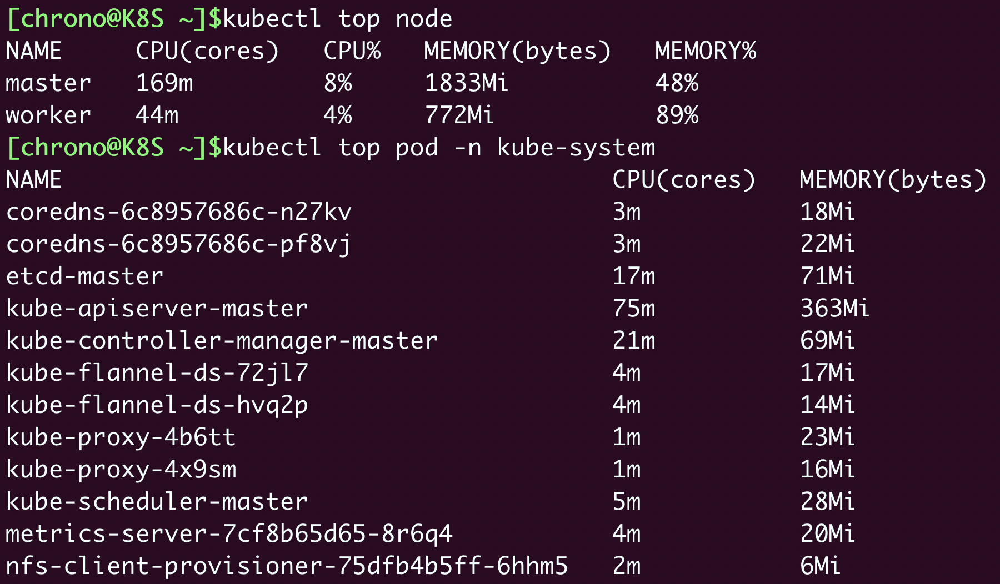
从这个截图里你可以看到：
- 集群里两个节点CPU使用率都不高，分别是8%和4%，但内存用的很多，master节点用了差不多一半（48%），而worker节点几乎用满了（89%）。
- 名字空间“kube-system”里有很多Pod，其中apiserver最消耗资源，使用了75m的CPU和363MB的内存。
HorizontalPodAutoscaler
有了Metrics Server，我们就可以轻松地查看集群的资源使用状况了，不过它另外一个更重要的功能是辅助实现应用的“水平自动伸缩”。
在[第18讲]里我们提到有一个命令 kubectl scale，可以任意增减Deployment部署的Pod数量，也就是水平方向的“扩容”和“缩容”。但是手动调整应用实例数量还是比较麻烦的，需要人工参与，也很难准确把握时机，难以及时应对生产环境中突发的大流量，所以最好能把这个“扩容”“缩容”也变成自动化的操作。
Kubernetes为此就定义了一个新的API对象，叫做“HorizontalPodAutoscaler”，简称是“hpa”。顾名思义，它是专门用来自动伸缩Pod数量的对象，适用于Deployment和StatefulSet，但不能用于DaemonSet（原因很明显吧）。
HorizontalPodAutoscaler的能力完全基于Metrics Server，它从Metrics Server获取当前应用的运行指标，主要是CPU使用率，再依据预定的策略增加或者减少Pod的数量。
下面我们就来看看该怎么使用HorizontalPodAutoscaler，首先要定义Deployment和Service，创建一个Nginx应用，作为自动伸缩的目标对象：
apiVersion: apps/v1
kind: Deployment
metadata:
name: ngx-hpa-dep
spec:
replicas: 1
selector:
matchLabels:
app: ngx-hpa-dep
template:
metadata:
labels:
app: ngx-hpa-dep
spec:
containers:
- image: nginx:alpine
name: nginx
ports:
- containerPort: 80
resources:
requests:
cpu: 50m
memory: 10Mi
limits:
cpu: 100m
memory: 20Mi
---
apiVersion: v1
kind: Service
metadata:
name: ngx-hpa-svc
spec:
ports:
- port: 80
protocol: TCP
targetPort: 80
selector:
app: ngx-hpa-dep
在这个YAML里我只部署了一个Nginx实例，名字是 ngx-hpa-dep。注意在它的 spec 里一定要用 resources 字段写清楚资源配额，否则HorizontalPodAutoscaler会无法获取Pod的指标，也就无法实现自动化扩缩容。
接下来我们要用命令 kubectl autoscale 创建一个HorizontalPodAutoscaler的样板YAML文件，它有三个参数：
- min，Pod数量的最小值，也就是缩容的下限。
- max，Pod数量的最大值，也就是扩容的上限。
- cpu-percent，CPU使用率指标，当大于这个值时扩容，小于这个值时缩容。
好，现在我们就来为刚才的Nginx应用创建HorizontalPodAutoscaler，指定Pod数量最少2个，最多10个，CPU使用率指标设置的小一点，5%，方便我们观察扩容现象：
export out="--dry-run=client -o yaml" # 定义Shell变量
kubectl autoscale deploy ngx-hpa-dep --min=2 --max=10 --cpu-percent=5 $out
得到的YAML描述文件就是这样：
apiVersion: autoscaling/v1
kind: HorizontalPodAutoscaler
metadata:
name: ngx-hpa
spec:
maxReplicas: 10
minReplicas: 2
scaleTargetRef:
apiVersion: apps/v1
kind: Deployment
name: ngx-hpa-dep
targetCPUUtilizationPercentage: 5
我们再使用命令 kubectl apply 创建这个HorizontalPodAutoscaler后，它会发现Deployment里的实例只有1个，不符合min定义的下限的要求，就先扩容到2个：
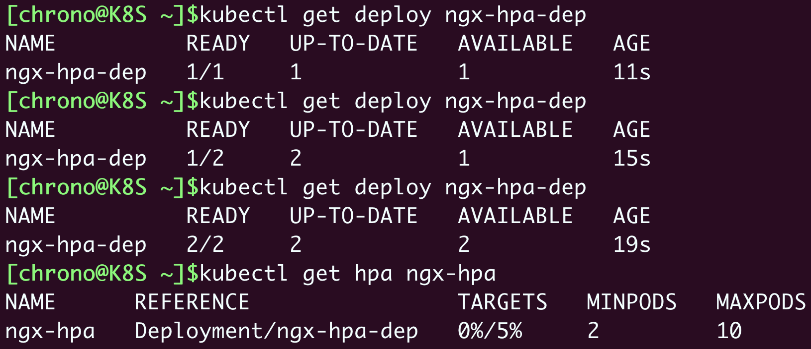
从这张截图里你可以看到，HorizontalPodAutoscaler会根据YAML里的描述，找到要管理的Deployment，把Pod数量调整成2个，再通过Metrics Server不断地监测Pod的CPU使用率。
下面我们来给Nginx加上压力流量，运行一个测试Pod，使用的镜像是“httpd:alpine”，它里面有HTTP性能测试工具ab（Apache Bench）：
kubectl run test -it --image=httpd:alpine -- sh
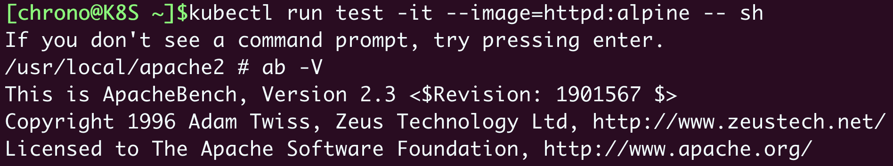
然后我们向Nginx发送一百万个请求，持续1分钟，再用 kubectl get hpa 来观察HorizontalPodAutoscaler的运行状况：
ab -c 10 -t 60 -n 1000000 'http://ngx-hpa-svc/'
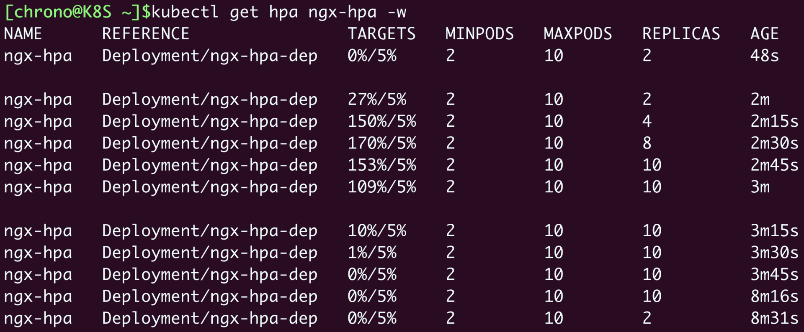
因为Metrics Server大约每15秒采集一次数据，所以HorizontalPodAutoscaler的自动化扩容和缩容也是按照这个时间点来逐步处理的。
当它发现目标的CPU使用率超过了预定的5%后，就会以2的倍数开始扩容，一直到数量上限，然后持续监控一段时间，如果CPU使用率回落，就会再缩容到最小值。
Prometheus
显然，有了Metrics Server和HorizontalPodAutoscaler的帮助，我们的应用管理工作又轻松了一些。不过，Metrics Server能够获取的指标还是太少了，只有CPU和内存，想要监控到更多更全面的应用运行状况，还得请出这方面的权威项目“Prometheus”。
其实，Prometheus的历史比Kubernetes还要早一些，它最初是由Google的离职员工在2012年创建的开源项目，灵感来源于Borg配套的BorgMon监控系统。后来在2016年，Prometheus作为第二个项目加入了CNCF，并在2018年继Kubernetes之后顺利毕业，成为了CNCF的不折不扣的“二当家”，也是云原生监控领域的“事实标准”。
和Kubernetes一样，Prometheus也是一个庞大的系统，我们这里就只做一个简略的介绍。
下面的这张图是Prometheus官方的架构图，几乎所有文章在讲Prometheus的时候必然要拿出来，所以我也没办法“免俗”：
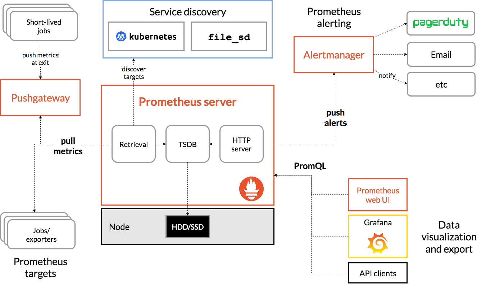
Prometheus系统的核心是它的Server，里面有一个时序数据库TSDB，用来存储监控数据，另一个组件Retrieval使用拉取（Pull）的方式从各个目标收集数据，再通过HTTP Server把这些数据交给外界使用。
在Prometheus Server之外还有三个重要的组件：
- Push Gateway，用来适配一些特殊的监控目标，把默认的Pull模式转变为Push模式。
- Alert Manager，告警中心，预先设定规则，发现问题时就通过邮件等方式告警。
- Grafana是图形化界面，可以定制大量直观的监控仪表盘。
由于同属于CNCF，所以Prometheus自然就是“云原生”，在Kubernetes里运行是顺理成章的事情。不过它包含的组件实在是太多，部署起来有点麻烦，这里我选用了“kube-prometheus”项目（https://github.com/prometheus-operator/kube-prometheus/），感觉操作起来比较容易些。
下面就跟着我来在Kubernetes实验环境里体验一下Prometheus吧。
我们先要下载kube-prometheus的源码包，当前的最新版本是0.11：
wget https://github.com/prometheus-operator/kube-prometheus/archive/refs/tags/v0.11.0.tar.gz
解压缩后，Prometheus部署相关的YAML文件都在 manifests 目录里，有近100个，你可以先大概看一下。
和Metrics Server一样，我们也必须要做一些准备工作，才能够安装Prometheus。
第一步，是修改 prometheus-service.yaml、grafana-service.yaml。
这两个文件定义了Prometheus和Grafana服务对象，我们可以给它们添加 type: NodePort（参考[第20讲]），这样就可以直接通过节点的IP地址访问（当然你也可以配置成Ingress）。
第二步，是修改 kubeStateMetrics-deployment.yaml、prometheusAdapter-deployment.yaml，因为它们里面有两个存放在gcr.io的镜像，必须解决下载镜像的问题。
但很遗憾，我没有在国内网站上找到它们的下载方式，为了能够顺利安装，只能把它们下载后再上传到Docker Hub上。所以你需要修改镜像名字，把前缀都改成 chronolaw：
image: k8s.gcr.io/kube-state-metrics/kube-state-metrics:v2.5.0
image: k8s.gcr.io/prometheus-adapter/prometheus-adapter:v0.9.1
image: chronolaw/kube-state-metrics:v2.5.0
image: chronolaw/prometheus-adapter:v0.9.1
这两个准备工作完成之后，我们要执行两个 kubectl create 命令来部署Prometheus，先是 manifests/setup 目录，创建名字空间等基本对象，然后才是 manifests 目录：
kubectl create -f manifests/setup
kubectl create -f manifests
Prometheus的对象都在名字空间“monitoring”里，创建之后可以用 kubectl get 来查看状态：
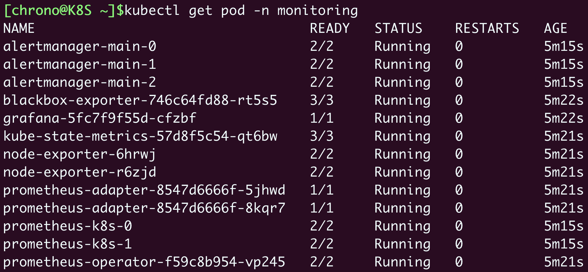
确定这些Pod都运行正常，我们再来看看它对外的服务端口：
kubectl get svc -n monitoring
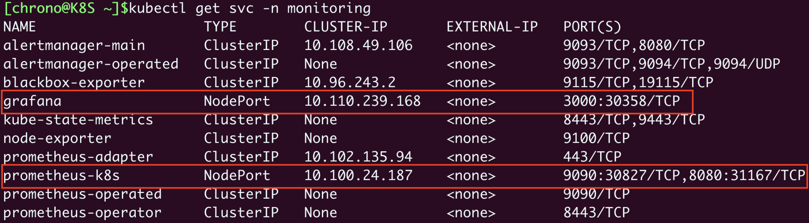
前面修改了Grafana和Prometheus的Service对象，所以这两个服务就在节点上开了端口，Grafana是“30358”，Prometheus有两个端口，其中“9090”对应的“30827”是Web端口。
在浏览器里输入节点的IP地址（我这里是“http://192.168.10.210”），再加上端口号“30827”，我们就能看到Prometheus自带的Web界面，：
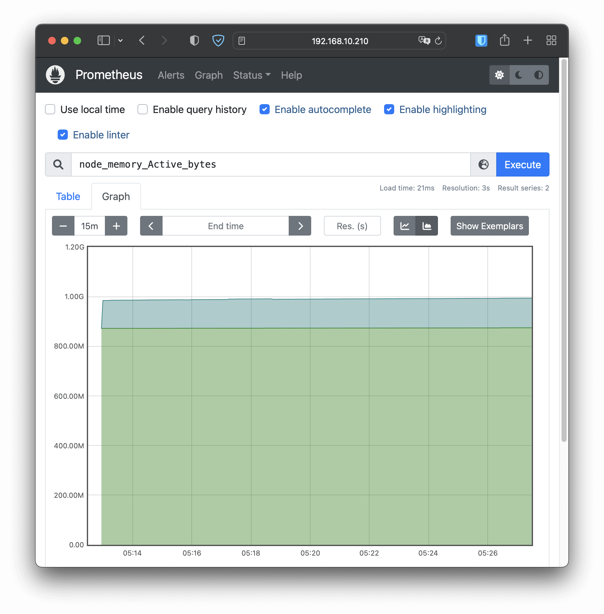
Web界面上有一个查询框，可以使用PromQL来查询指标，生成可视化图表，比如在这个截图里我就选择了“node_memory_Active_bytes”这个指标，意思是当前正在使用的内存容量。
Prometheus的Web界面比较简单，通常只用来调试、测试，不适合实际监控。我们再来看Grafana，访问节点的端口“30358”（我这里是“http://192.168.10.210:30358”），它会要求你先登录，默认的用户名和密码都是“admin”：
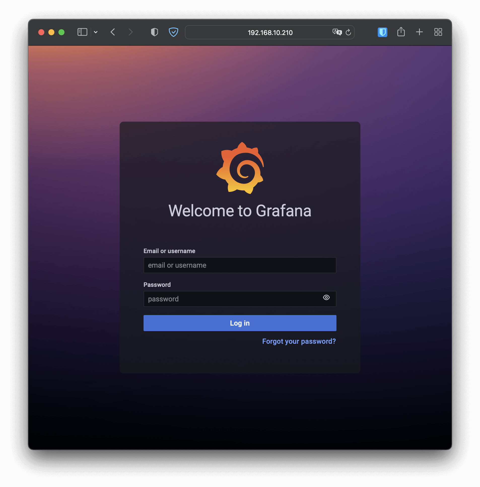
Grafana内部已经预置了很多强大易用的仪表盘，你可以在左侧菜单栏的“Dashboards - Browse”里任意挑选一个：
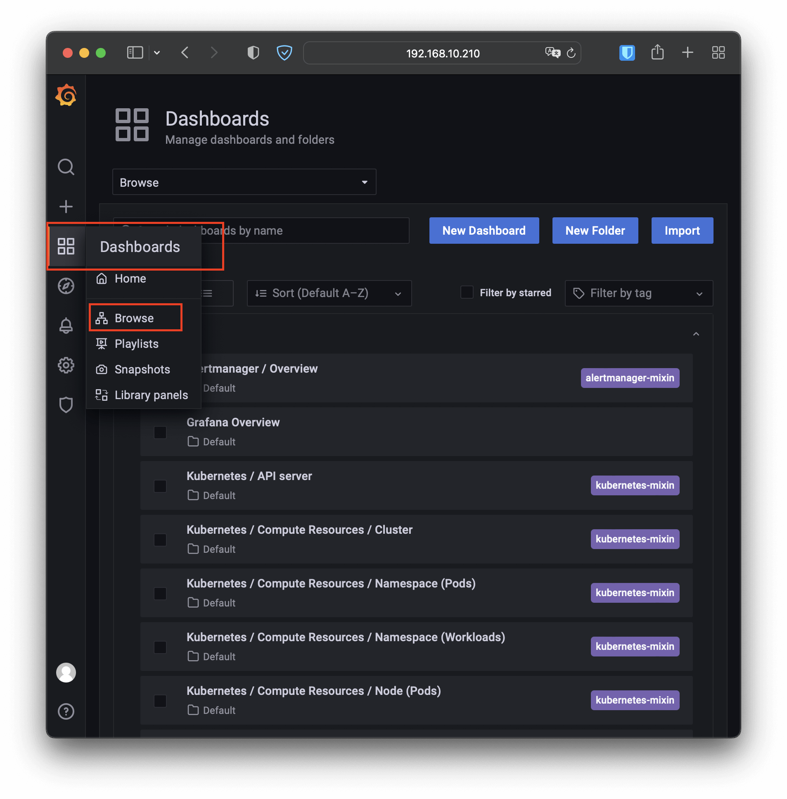
比如我选择了“Kubernetes / Compute Resources / Namespace (Pods)”这个仪表盘，就会出来一个非常漂亮图表，比Metrics Server的 kubectl top 命令要好看得多，各种数据一目了然：
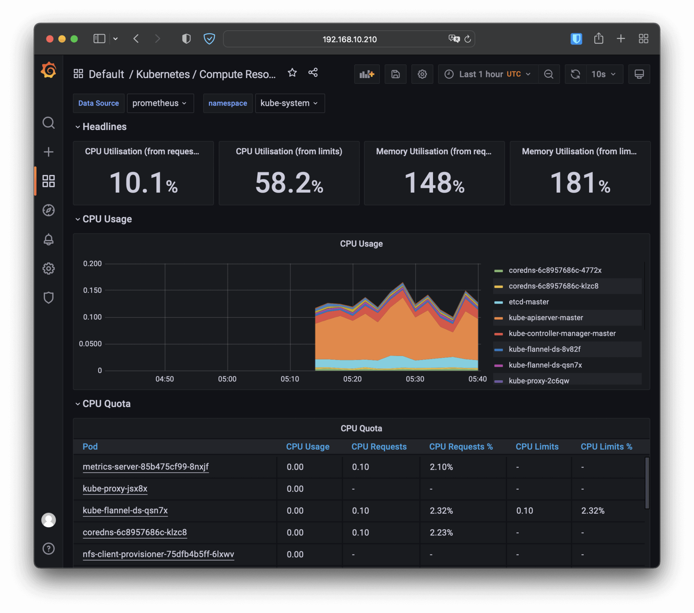
关于Prometheus就暂时介绍到这里，再往下讲可能就要偏离我们的Kubernetes主题了，如果你对它感兴趣的话，可以课后再去它的官网上看文档，或者参考其他的学习资料。
小结
在云原生时代，系统的透明性和可观测性是非常重要的。今天我们一起学习了Kubernetes里的两个系统监控项目：命令行方式的Metrics Server、图形化界面的Prometheus，利用好它们就可以让我们随时掌握Kubernetes集群的运行状态，做到“明察秋毫”。
再简单小结一下今天的内容：
- Metrics Server是一个Kubernetes插件，能够收集系统的核心资源指标，相关的命令是
kubectl top。 - Prometheus是云原生监控领域的“事实标准”，用PromQL语言来查询数据，配合Grafana可以展示直观的图形界面，方便监控。
- HorizontalPodAutoscaler实现了应用的自动水平伸缩功能，它从Metrics Server获取应用的运行指标，再实时调整Pod数量，可以很好地应对突发流量。
课下作业
最后是课下作业时间，给你留两个思考题：
- 部署了HorizontalPodAutoscaler之后，如果再执行
kubectl scale手动扩容会发生什么呢？ - 你有过应用监控的经验吗？应该关注哪些重要的指标呢？
非常期待在留言区看到你的发言，同我同其他同学一起讨论。我们下节课再见。
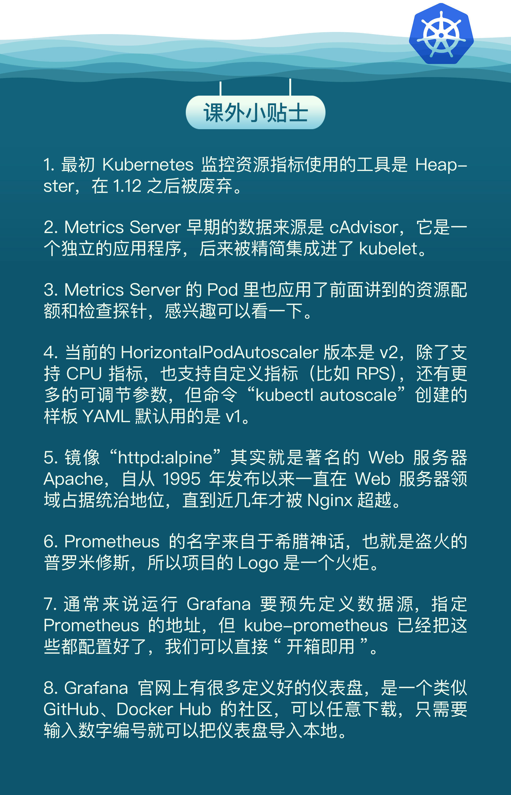
© 2019 - 2023 Liangliang Lee. Powered by gin and hexo-theme-book.